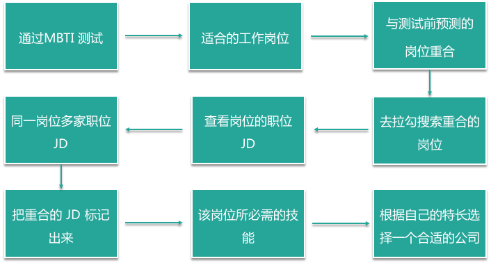

- 00 开篇词：了解面试“潜规则”，从海选中脱颖而出.md.html
- 01 设计一份吸引面试官的简历.md.html
- 02 读懂职位 JD，精准投递简历.md.html
- 03 把握投递简历的黄金时间段.md.html
- 04 做好充分的准备去面试.md.html
- 05 把握面试时的关键点.md.html
- 06 捕捉 HR 微表情，做出应对策略.md.html
- 07 巧妙推销自己的 3 个技巧.md.html
- 08 认清自身实力，明确求职方向.md.html
- 09 判断公司背景，做出合理选择.md.html
- 10 了解行业薪资，清晰找准定位.md.html
- 11 目标明确，阐明沟通.md.html
- 12 工作交接流程福利衔接.md.html
08 认清自身实力，明确求职方向
你好，我是你的面试课老师杨宇堃，欢迎进入第 08 课时的内容“认清自身实力，明确求职方向”。 这一讲我们来分析如何更好的认识自己，此时的你可能会很奇怪，我们不是在分析面试时的技巧，以及顺利收到 Offer 吗，为什么这一讲要分析如何看清自己了呢？其实也不奇怪只有更好的认清楚自己，才能更好的明确方向以及获得更好的岗位。
认清自己的实力
我经常会被身边的小伙伴问到：我应该选择什么工作方向啊？目前的工作好累啊，想换个工作方向但是不知道如何选择？某某行业的薪资好高啊，要不我去试试吧？ 如果这样问，有可能被目前社会的很多利益所引导，已经忘了出发点是什么或者没有思考过未来的职业规划。平时也会听到身边有人说“希望可以拥有一家自己的咖啡厅”，如果这只是一句玩笑话，说说就过去了；但如果你是认真的，那有没有考虑过：在做这件事情之前都准备了什么呢？所以，在选择工作时先要想想自己的擅长点是什么，同时为这份工作做了哪些准备等。 这里我给你推荐一款职业人格评估工具，即 MBTI，来测一测自己是偏外向还是内向、是一个有规划的人还是一个探索性的人、是喜欢做挑战性的工作还是喜欢辅助团队做一些执行层面的工作等，当然在测试的时候要依托于自己的内心哦。
明确求职方向
测试完以后就要开始思考到底该如何明确求职方向，其实是发挥出自己的优势，去寻找一份适合的工作。俗话说「360 行，行行出状元」，相信任何一份工作的发展前景都是非常光明的，只要在某一份工作上做的足够深入且全面，相信你的职业道路也会越来越宽广。尽量不要对自己还没有接触过的事情就开始焦虑，这样会限制自己的想法。 比如，现在大家求职一般会从两个方面考虑，即领域相关的和专业度相关的。
- 领域相关的可分为互联企业和传统企业，比如，如果你是一个充满创新能力且积极愿意改变自己生活的人，可以选择去互联网行业；如果你比较喜欢稳定，对程序化的工作比较看重可以选择去传统企业。
- 专业度相关的可分为：硬技能型和软技能型。例如，硬技能型有编辑、会计、研发、法律、统计等；软技能型有销售、活动执行、客服、创意等。 具体可参考如下表格： | | 互联网 | 传统行业 | | ---- | ---------------------- | ---------------- | | 硬性 | 研发工程师、数据分析师 | 会计、机械师 | | 软性 | 产品经理、市场、销售 | 销售、市场、客服 | 根据拉勾后台数据的显示，以下是互联网行业热门岗位的 Top 5：
- 研发工程师岗位需要具备技术能力、逻辑能力、时间观念等
- 产品经理岗位需要具备逻辑能力、沟通能力、执行力等
- 运营岗位需要具备一定的分析能力以及对宏观的管理能力等
- 市场岗位需要具备创意的想法、有一个开朗的性格、沟通能力等
- 销售岗位需要具备较强的沟通能力且有一个开朗的性格等 若想了解其他具体的岗位详情，建议可通过 MBTI 的测试来了解自己擅长的工作岗位，相信测试完后的结果与测试前的认知岗位会有重合。此时，可以通过拉勾网站去搜索密切度高的岗位，然后查看该岗位的职位 JD，建议搜索查看同一岗位的多家职位 JD，把JD 重合的部分标记出来，其实这些就是该岗位所必需的技能；当然了，多家职位 JD 也有不同的要求，这时可根据自己擅长的点和过往的经历来选出最合适的公司。  也可以通过回复你和对你产生邀约的公司的职位要求进行描述，再次验证是否真的是你的技能方向。 找到自己发展的方向是一方面，当然也需要你对自己的工作年限和自我能力作出正确的认知。在我多年的筛选简历中，经常可以收到一个工作三年左右的小伙伴投递了公司高管的岗位，也许你的职位优势是一个非常具有管理能力的人，但是对于高管岗位还是需要你有很多年的工作经验和项目经验做累计的。所以建议大家在投递简历的时候也要明确自己应该在什么工作年限和工作的阶段，从而找到最合适自己的岗位。 相信通过几年的磨练，在目前的岗位上，也能很快得到大家希望有用的职级和薪资。